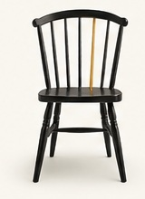

The Equality Paradox
How can two people sincerely believe they are both being discriminated against? Understanding today's equality debate requires understanding history.
Read the Story →
The Missing SeatStories · Evidence · ActionThe Archive
Justice. Belonging. Courage. History. Each story begins with a question and follows the evidence toward what happened next.
How can two people sincerely believe they are both being discriminated against? Understanding today's equality debate requires understanding history.
Read the Story →Autism doesn't have a single look. Many autistic people spend their lives masking who they are just to fit into a world that misunderstands them.
Read the Story →When Britain abolished slavery, it compensated enslavers, not the enslaved. The debate over reparatory justice continues today.
Read the Story →Millions of parents are raising children alone. The missing seat isn't love, it's support. What happens when communities stop showing up?
Read the Story →A promising campaign ended before voters could decide, raising questions about ballot access, representation, and whether election rules are applied consistently.
Read the Story →Myanmar's humanitarian crisis reminds us that people do not stop suffering when the headlines disappear. More than 16 million people still need humanitarian assistance.
Read the Story →A New Mexico investigation found that Indigenous and Hispanic students were suspended more often, and for longer periods, than white students accused of similar behavior.
Read the Story →A classroom of children noticed a classmate who was struggling and chose to make sure she knew she was supported and not alone.
Read the Story →Indigenous children in Australia remain disproportionately arrested, detained, and imprisoned. A child should never lose their future because the system failed to give them the same chance.
Read the Story →